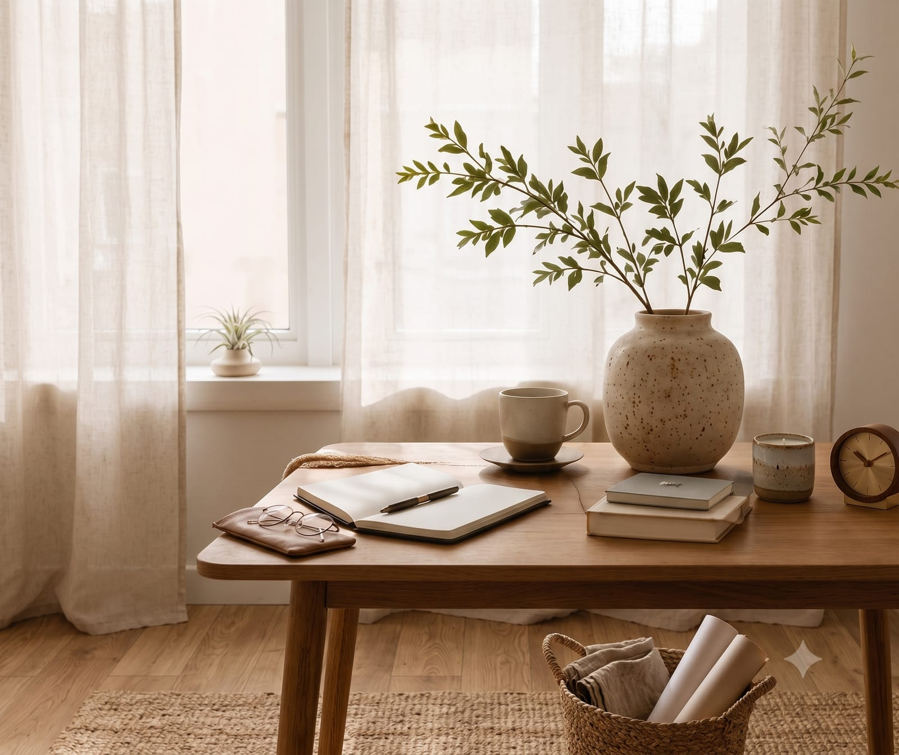
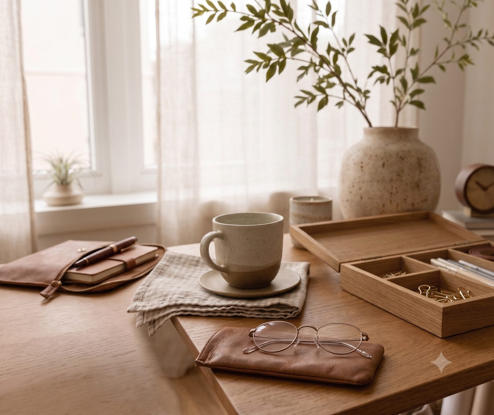

Atendimento online
Sessões por vídeo, com conforto e sigilo.

Há histórias que precisam, antes de tudo, encontrar um lugar onde possam ser escutadas.
Atendimento online para adolescentes e adultos.
Um espaço de escuta para compreender emoções, relações e a própria história.
Sessões por vídeo, com conforto e sigilo.
Um espaço para diferentes momentos da vida.
Cada processo é único e respeita o tempo de cada pessoa.
O atendimento acontece com confidencialidade e respeito.

Existem momentos em que sentimos que repetimos os mesmos caminhos, carregamos angústias difíceis de nomear ou simplesmente percebemos que algo já não faz sentido como antes.
A psicanálise oferece um espaço de escuta cuidadosa para que cada pessoa possa compreender sua própria história e construir novos sentidos para ela.
Um espaço seguro e ético para falar sobre o que te habita.
A psicanálise ajuda a dar sentido ao que, muitas vezes, parece sem sentido.
Quando você se conhece, novas escolhas se tornam possíveis.
Psicanalista clínica em constante formação
Acredito na escuta como possibilidade de compreender aquilo que, muitas vezes, ainda não encontrou palavras. Minha prática é fundamentada na ética da psicanálise e busca oferecer um espaço de acolhimento, reflexão e elaboração das experiências de cada sujeito.
Textos breves sobre questões que atravessam nossa vida emocional e relacional.
Sobre o tempo acelerado de dentro e o que a escuta pode oferecer a ele.
Leia maisPor que repetimos certas relações e como isso fala da imagem que temos de nós.
Leia maisUm olhar sobre as transformações dessa fase e a importância de um espaço próprio.
Leia maisCada sessão tem duração aproximada de 50 minutos.
As sessões acontecem por vídeo, em um horário combinado, de um lugar onde você se sinta à vontade e com privacidade.
Em geral, os encontros são semanais. A frequência é definida em conjunto, conforme cada processo.
Não, mas tenho horários específicos para atendimento social. Consulte a agenda.
Você pode entrar em contato pelo WhatsApp ou e-mail para conversarmos e encontrar o melhor horário.
Se sentir que é a hora, estou aqui para oferecer um espaço de escuta e acolhimento, no seu tempo.
Agendar atendimento